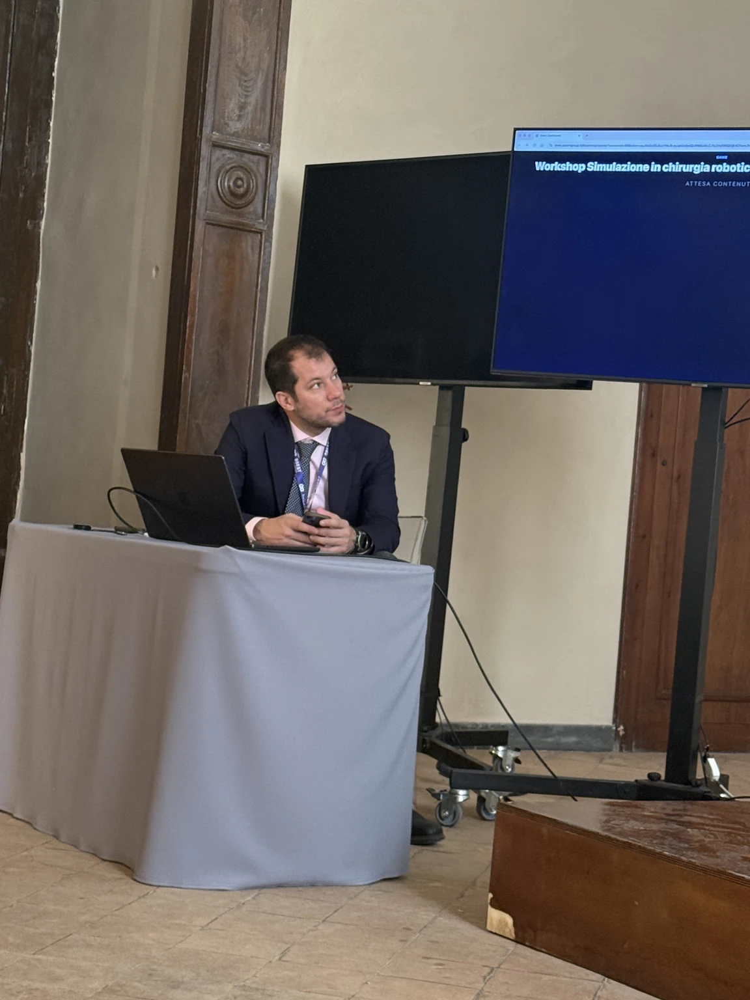
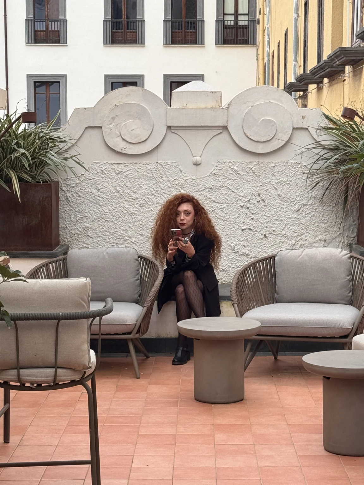
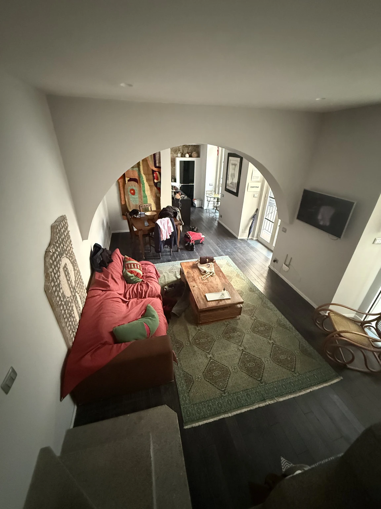
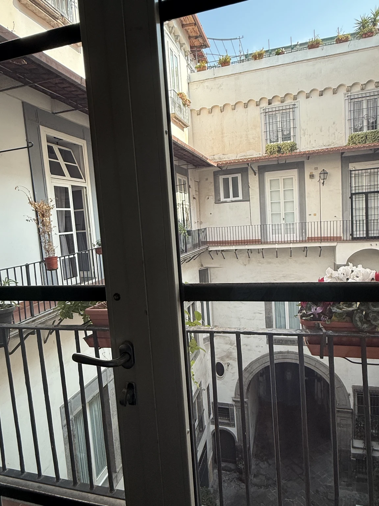
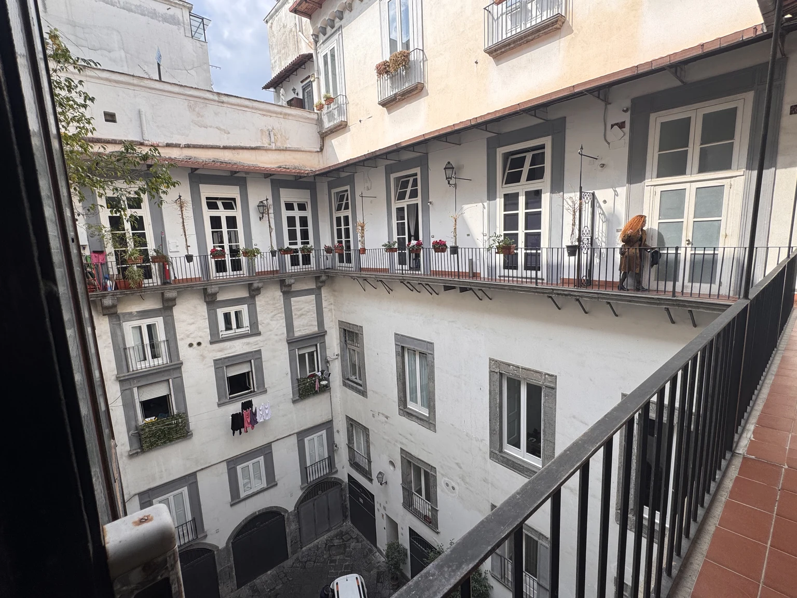
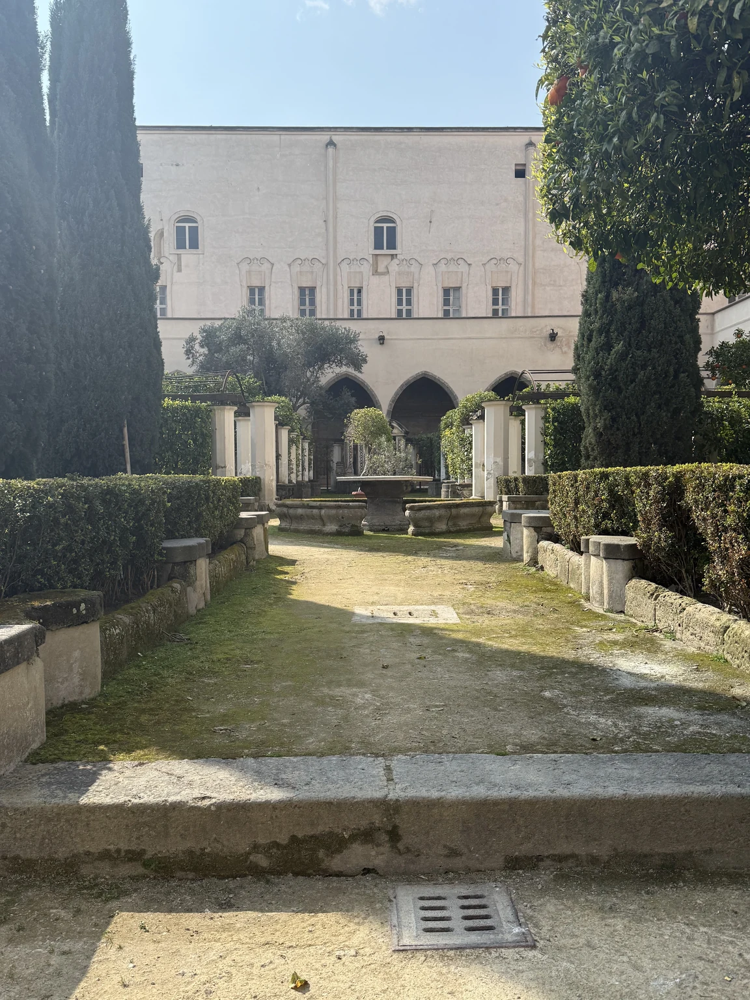

Un viaggio nato da un impegno di lavoro e finito tra i cortili del centro storico: un castello all’alba, una sala congressi, un ballatoio di notte, un chiostro di maioliche e una cupola di vetro.
Napoli non si visita: ci si entra da una porta laterale e si finisce sempre da un’altra parte rispetto a dove si era diretti.
3giorni
1congresso
8fotografie
1video
06
Venerdì 6 marzo
Il castello, alle sette del mattino
La prima immagine di Napoli è presa dall’alto, con la città ancora vuota e la luce che arriva di taglio sul Maschio Angioino.
Piazza Municipio, ore 7
Castel Nuovo
Il Maschio Angioino
Voluto da Carlo I d’Angiò a partire dal 1279 come nuova reggia, fu ricostruito dagli Aragonesi nel Quattrocento: l’arco di trionfo in marmo bianco tra le due torri celebra l’ingresso di Alfonso d’Aragona in città nel 1443. Oggi ospita il Museo Civico. Dalla finestra, con la piazza deserta, le cinque torri di piperno sembrano una scenografia in attesa del pubblico.
07
Sabato 7 marzo
Il congresso e la terrazza
La giornata del lavoro: il congresso GAME, un workshop sulla simulazione in chirurgia robotica e, a fine pomeriggio, una terrazza al sole di marzo. Di notte, il centro storico.

Al tavolo dei relatori
Il motivo del viaggio
GAME 2026
GAME, Great Anaesthesia Management Experience, è un congresso di anestesia e gestione clinica che nel 2026 si è tenuto a Napoli il 6 e 7 marzo. Nella fotografia, scattata da Poli, il workshop dedicato alla simulazione in chirurgia robotica: il tavolo con la tovaglia grigia, lo schermo e un portale in marmo che ricorda che a Napoli anche le sale congressi stanno dentro palazzi antichi.
Il lavoro ci porta in giro; il resto lo aggiungiamo noi.

La terrazza, tardo pomeriggio
Pausa
Una terrazza a due passi dal congresso
Finiti i lavori, il sole di marzo scalda ancora il cotto della terrazza. Alle spalle di Poli un frontone in stucco con le sue volute: a Napoli il barocco non sta solo nelle chiese, affiora anche sui tetti dei palazzi, tra le piante in vaso e i divanetti.
Il ballatoio, quasi mezzanotte
La notte
Il B&B nel centro storico
La seconda notte la passiamo in un B&B ricavato in un palazzo del centro antico, tra San Domenico Maggiore e la Cappella Sansevero. Si entra dal cortile e si sale su un ballatoio che gira intorno al vuoto: ringhiere di ferro, finestre con le cornici di piperno, i panni stesi dei vicini. Il video è la ronda notturna sul ballatoio, prima di andare a dormire.
Un cortile napoletano è una piazza in verticale: ci si affaccia, ci si parla, ci si guarda.
La domenica mattina il cortile si sveglia prima di noi: voci dai ballatoi, una radio, il rumore delle persiane.
08
Domenica 8 marzo
Cortili, maioliche e una cupola
L’ultimo giorno è quello dei luoghi scelti da noi: il palazzo dove abbiamo dormito, il chiostro di Santa Chiara e, prima del treno, la Galleria Umberto I.

Il salotto del B&B

Dalla porta-finestra

Il cortile di giorno
Dove abbiamo dormito
Un palazzo del centro antico
Il nome del B&B non l’abbiamo annotato; è rimasto il palazzo. Le cornici grigie in piperno, la pietra vulcanica che a Napoli disegna portali e finestre, i ballatoi di ferro e le porte-finestre a piccoli riquadri sono la grammatica comune dei palazzi del centro storico, dove ogni piano si apre sul cortile invece che sulla strada.
Di giorno il cortile è una scala aperta; di notte, un palcoscenico.

Santa Chiara, un viale del chiostro
Santa Chiara
Il chiostro delle Clarisse
Il complesso di Santa Chiara fu fondato nel 1310 da Roberto d’Angiò e dalla regina Sancia. Il chiostro, gotico nell’impianto, fu trasformato tra il 1739 e il 1742 da Domenico Antonio Vaccaro, che lo attraversò con viali e pilastri rivestiti di maioliche dipinte dai Massa: tralci, limoni, scene di vita quotidiana. Nella fotografia uno dei viali laterali, con le siepi e i cipressi, e in fondo le arcate del portico. La chiesa fu quasi distrutta da un bombardamento nel 1943 e ricostruita nelle forme gotiche originarie.
Galleria Umberto I, guardando in alto
Epilogo
Galleria Umberto I
Costruita tra il 1887 e il 1890 su progetto di Emanuele Rocco, negli anni del Risanamento, la Galleria collega via Toledo al Teatro San Carlo. La cupola in vetro e ferro, alta circa 57 metri, è l’ultima fotografia del viaggio: presa a naso in su, poco prima di tornare verso la stazione, con la struttura che si apre come un ombrello sopra i quattro bracci.
Napoli si lascia sempre con la sensazione di averne visto un pezzo solo. È il modo che ha per farsi tornare a trovare.